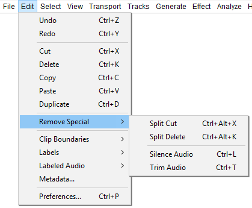
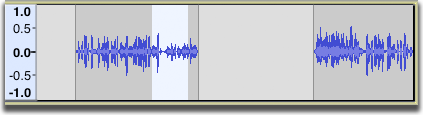
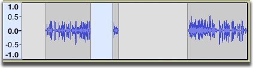
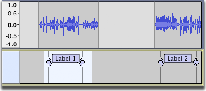
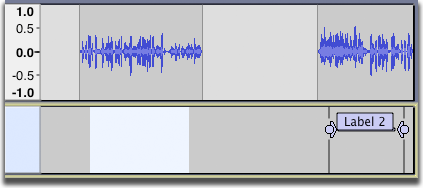
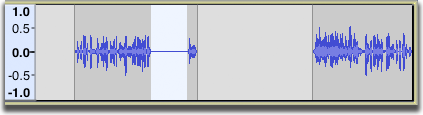
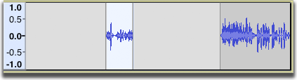

Edit Menu: Remove Special
You can also silence or trim audio only, not affecting labels.
- Click, or hover, on any menu item in the image to read about that command. Skip the image
- 
| You may hear a click at the edit points when you remove or paste audio. This can be caused by DC offset in the waveform or by poor selection of the edit points. See this Editing Frequently Asked Question for how to deal with this. |
Split Cut Ctrl + Alt + X
Same as , but none of the audio data or labels to right of the selection are shifted. A gap is thus left behind in the audio track which splits the existing audio clip into two clips that can be moved independently using Time Shift Tool.
- Split Cut with audio selected:
- 
- 
This is also a useful command to remove one label of a group of labels without affecting the other labels (be sure to select only in the label track unless you want to cut the audio as well as the label). The labels following the deleted section do not move to the left. The labels still correspond to the same audio regions. This is a quick way to delete a label without affecting any other labels on the Label Track.
- Split Cut with label selected:
- 
- 
Split Delete Ctrl + Alt + K
Same as but the audio and/or labels are not put on the clipboard.
The following two commands affect the audio in the selection but do not affect any labels that are in the selection.
Silence Audio Ctrl + L
Replaces the selected audio with silence.
- 
Trim Audio Ctrl + T
Removes all audio from the current clip except the selected part, creating its own clip from the remaining audio. If there are other separate clips in the same track these are not removed or shifted.
- 
- Result: the audio in the clip to the right is unaffected.
If an entire clip (or clips) is selected then all other clips on the track will be deleted.